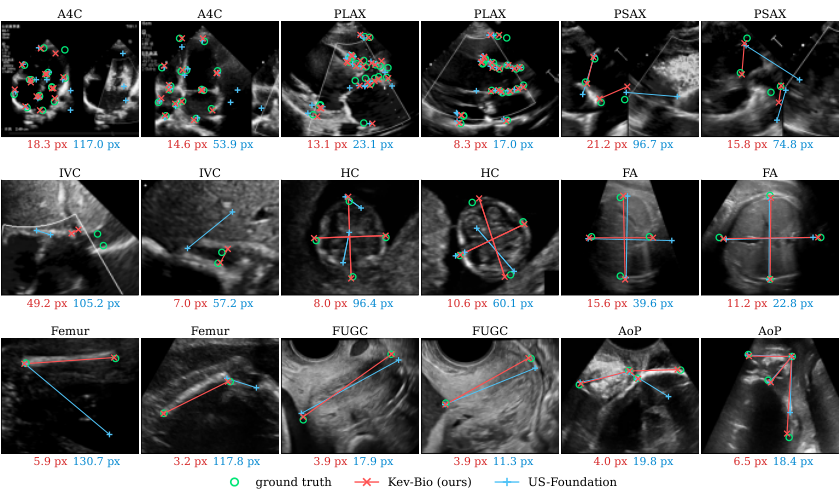
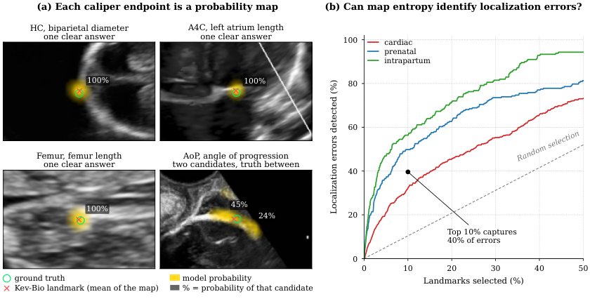
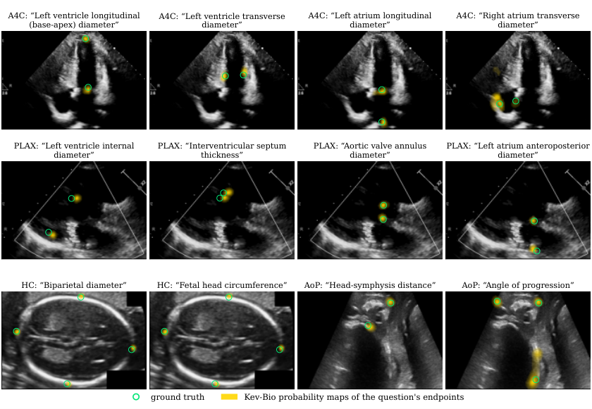

✨ arXiv preprint, 2026 ✨
Purpose: Ultrasound biometry is widely used across various clinical applications, including prenatal and cardiac examinations, to obtain quantitative measurements by placing calipers at anatomical landmarks. However, these measurements remain subject to interoperator variability as they rely largely on manual caliper placement. Conventional methods often use specialized prediction heads for different ultrasound tasks, whereas vision-language models offer flexibility through text instructions. However, direct coordinate prediction does not explicitly model spatial likelihood distributions, limiting the representation of localization ambiguity. Methods: We propose Kev-Bio, a vision-language model that uses clinical measurement questions to guide ultrasound landmark detection. Inspired by System One decision models, Kev-Bio uses decision representations of the language model to generate queries for each caliper endpoint. These queries are matched against shared dense ultrasound features to produce spatial probability maps, from which landmark coordinates and clinical measurements are derived. The model is trained end-to-end using both landmark localization and clinical measurement losses. Results: On the nine-view FU/GU Biometry 2026 dataset, Kev-Bio achieves a mean radial error (MRE) of 22.50 pixels and a clinical measurement mean absolute error (MAE) of 15.38, outperforming the compared baselines in overall performance. Conclusion: These results demonstrate the effectiveness of Kev-Bio for ultrasound landmark detection and clinical measurement across different anatomical views. Our code and models are available at https://github.com/moeinheidari7829/Kev-Bio.
| Task | View | Samples | LM | Meas. |
| Cardiac | ||||
| A4C | Apical four-chamber | 108 | 16 | 8 D |
| PLAX | Parasternal long-axis | 87 | 22 | 11 D |
| PSAX | Parasternal short-axis | 49 | 4 | 2 D |
| IVC | Subcostal inferior vena cava | 38 | 2 | 1 D |
| Prenatal | ||||
| HC | Fetal head (transthalamic) | 999 | 4 | 1 D + 1 C |
| FA | Fetal abdomen | 500 | 4 | 1 C |
| Femur | Fetal femur | 702 | 2 | 1 D |
| FUGC | Transvaginal cervix | 260 | 2 | 1 D |
| Intrapartum | ||||
| AoP | Transperineal (angle of progression) | 4,000 | 4 | 1 D + 1 A |
| Total | 9 views | 6,743 | 60 | 29 |
| Method | Params (M) | Cardiac | Prenatal | Intrapartum | Avg. | ||||||
| A4C | PLAX | PSAX | IVC | HC | FA | Femur | FUGC | AoP | |||
| MRE (px) ↓ | |||||||||||
| General Baselines | |||||||||||
| nnLandmark Ertl et al. (2026) | 140.1 | 44.23 | 26.71 | 58.87 | 45.92 | 25.45 | 19.36 | 22.28 | 6.99 | 8.79 | 28.73 ± 4.12 |
| MedSapiens Elbatel et al. (2026) | 24.0 | 118.85 | 76.49 | 108.41 | 130.09 | 35.32 | 24.34 | 24.75 | 11.56 | 9.61 | 59.94 ± 4.15 |
| Challenge Baselines | |||||||||||
| CAMS Li et al. (2026) | 35.5 | 44.92 | 20.99 | 42.76 | 36.31 | 18.07 | 17.04 | 19.29 | 6.86 | 8.71 | 23.88 ± 2.10 |
| IMPACT-L Rasaee and Rivaz (2026) | 144.4 | 44.40 | 23.32 | 60.22 | 51.72 | 17.03 | 15.95 | 19.66 | 7.54 | 9.41 | 27.70 ± 3.18 |
| FMUB Wu et al. (2026) | 29.5 | 41.73 | 21.45 | 48.80 | 41.17 | 18.58 | 16.58 | 20.39 | 6.90 | 9.22 | 24.98 ± 3.41 |
| US-Foundation Panagiotakopoulou et al. (2026) | 56.1 | 44.69 | 22.15 | 51.33 | 45.10 | 17.70 | 16.48 | 20.16 | 6.61 | 8.44 | 25.85 ± 2.87 |
| Kev-Bio (ours) | 35.0 | 40.88 | 20.95 | 42.24 | 35.08 | 13.76 | 15.86 | 18.77 | 6.47 | 8.48 | 22.50 ± 2.10 |
| MAE ↓ | |||||||||||
| General Baselines | |||||||||||
| nnLandmark Ertl et al. (2026) | 25.65 | 12.31 | 35.31 | 22.43 | 23.47 | 53.96 | 18.85 | 4.46 | 4.85 | 22.37 ± 1.47 | |
| MedSapiens Elbatel et al. (2026) | 59.77 | 40.27 | 75.64 | 105.43 | 27.16 | 71.68 | 19.87 | 7.50 | 5.34 | 45.85 ± 4.15 | |
| Challenge Baselines | |||||||||||
| CAMS Li et al. (2026) | 24.95 | 8.52 | 22.45 | 9.90 | 24.09 | 52.05 | 15.63 | 4.32 | 5.33 | 18.58 ± 1.28 | |
| IMPACT-L Rasaee and Rivaz (2026) | 18.82 | 9.37 | 36.08 | 11.18 | 15.80 | 50.94 | 16.49 | 5.38 | 5.70 | 18.86 ± 1.20 | |
| FMUB Wu et al. (2026) | 18.00 | 8.74 | 25.10 | 11.12 | 15.00 | 52.23 | 17.45 | 4.22 | 5.34 | 17.47 ± 0.90 | |
| US-Foundation Panagiotakopoulou et al. (2026) | 22.42 | 10.54 | 28.77 | 15.87 | 14.93 | 51.72 | 17.94 | 3.92 | 4.63 | 18.97 ± 1.41 | |
| Kev-Bio (ours) | 16.12 | 8.42 | 19.23 | 9.48 | 10.59 | 49.22 | 16.53 | 4.00 | 4.84 | 15.38 ± 1.24 | |



| Variant | DINOv2 | LLM | Pointer | MRE (px) ↓ | MAE ↓ |
|---|---|---|---|---|---|
| w/o DINOv2 | ✗ | ✓ | ✓ | 24.85 ± 2.66 | 16.94 ± 0.94 |
| w/o LLM | ✓ | ✗ | ✓ | 23.66 ± 2.63 | 16.77 ± 1.23 |
| w/o pixel pointer | ✓ | ✓ | ✗ | 35.50 ± 3.12 | 23.64 ± 1.60 |
| Kev-Bio (full) | ✓ | ✓ | ✓ | 22.50 ± 2.10 | 15.38 ± 1.24 |
@article{heidari2026every,
title = {Every Pixel Is an Option: A System One Model for Medical Ultrasound Biometry},
author = {Heidari, Moein and Rao, Junbo and Chen, Yudan and Medghalchi, Yasamin and Jiang, River and Chen, Wenjin and Foran, David J. and Grewal, Jasmine and Hacihaliloglu, Ilker},
journal = {arXiv preprint arXiv:2611.03360},
year = {2026}
}